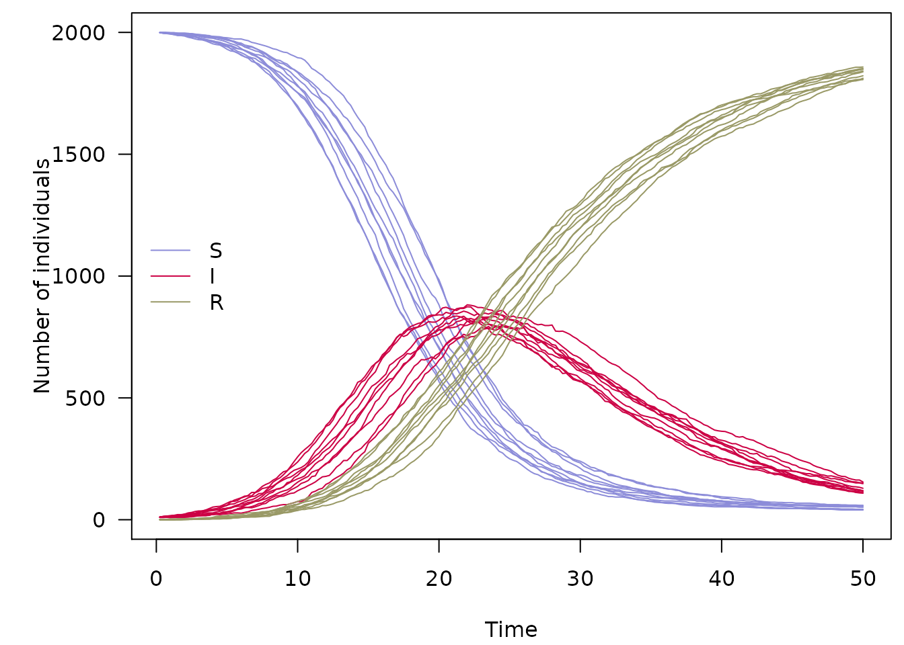

A simple definition of the SIR model, as given in the odin documentation is: \[\begin{align*} \frac{dS}{dt} &= -\beta \frac{SI}{N} \\ \frac{dI}{dt} &= \beta \frac{SI}{N} - \gamma I \\ \frac{dR}{dt} &= \gamma I \\ \end{align*}\] \(S\) is the number of susceptibles, \(I\) is the number of infected and \(R\) is the number recovered; the total population size \(N = S + I + R\) is constant. \(\beta\) is the infection rate, \(\gamma\) is the recovery rate.
Discretising this model in time steps of width \(dt\) gives the following update equations for each time step:
\[\begin{align*} S_{t+1} &= S_t - n_{SI} \\ I_{t+1} &= I_t + n_{SI} - n_{IR} \\ R_{t+1} &= R_t - n_{IR} \end{align*}\]
where \[\begin{align*} n_{SI} &\sim B(S, 1 - e^{-\beta \frac{I}{N} \cdot dt}) \\ n_{IR} &\sim B(I, 1 - e^{-\gamma \cdot dt}) \end{align*}\]
odin.dust
The above equations can straightforwardly be written out using the odin DSL:
## Definition of the time-step and output as "time" dt <- user(1) initial(time) <- 0 update(time) <- (step + 1) * dt ## Core equations for transitions between compartments: update(S) <- S - n_SI update(I) <- I + n_SI - n_IR update(R) <- R + n_IR ## Individual probabilities of transition: p_SI <- 1 - exp(-beta * I / N) # S to I p_IR <- 1 - exp(-gamma) # I to R ## Draws from binomial distributions for numbers changing between ## compartments: n_IR <- rbinom(I, p_IR * dt) n_SI <- rbinom(S, p_SI * dt) ## Total population size N <- S + I + R ## Initial states: initial(S) <- S_ini initial(I) <- I_ini initial(R) <- 0 ## User defined parameters - default in parentheses: S_ini <- user(1000) I_ini <- user(10) beta <- user(0.2) gamma <- user(0.1)
This is converted to a C++ dust model, and compiled into a library in a single step, using odin.dust. Save the above code as a file named sir.R. File names must not contain special characters.
library(odin.dust)
gen_sir <- odin.dust::odin_dust("sir.R")
#> ℹ 12 functions decorated with [[cpp11::register]]
#> ✔ generated file cpp11.R
#> ✔ generated file cpp11.cpp
#> ℹ 12 functions decorated with [[cpp11::register]]
#> ✔ generated file cpp11.R
#> ✔ generated file cpp11.cpp
#> Re-compiling siree205553
#>
─ installing *source* package ‘siree205553’ ...
#>
** using staged installation
#>
** libs
#>
make[1]: Entering directory '/tmp/RtmpjGUxgO/filed3e3537e86cf/src'
#>
make[1]: Leaving directory '/tmp/RtmpjGUxgO/filed3e3537e86cf/src'
#>
make[1]: Entering directory '/tmp/RtmpjGUxgO/filed3e3537e86cf/src'
#> g++ -std=gnu++11 -I"/usr/share/R/include" -DNDEBUG -I'/home/rfitzjoh/lib/R/library/cpp11/include' -g -Wall -Wextra -pedantic -Wmaybe-uninitialized -Wno-unused-parameter -Wno-unused-variable -O2 -I/home/rfitzjoh/lib/R/library/dust/include -DHAVE_INLINE -fopenmp -fpic -g -O2 -fdebug-prefix-map=/build/r-base-8T8CYO/r-base-4.0.3=. -fstack-protector-strong -Wformat -Werror=format-security -Wdate-time -D_FORTIFY_SOURCE=2 -g -c cpp11.cpp -o cpp11.o
#>
cpp11.cpp:109:56: warning: cast between incompatible function types from ‘SEXPREC* (*)(SEXP, SEXP, SEXP, SEXP, SEXP)’ {aka ‘SEXPREC* (*)(SEXPREC*, SEXPREC*, SEXPREC*, SEXPREC*, SEXPREC*)’} to ‘DL_FUNC’ {aka ‘void* (*)()’} [-Wcast-function-type]
#> 109 | {"_siree205553_dust_sir_alloc", (DL_FUNC) &_siree205553_dust_sir_alloc, 5},
#> | ^~~~~~~~~~~~~~~~~~~~~~~~~~~
#> cpp11.cpp:111:56: warning: cast between incompatible function types from ‘SEXPREC* (*)(SEXP, SEXP)’ {aka ‘SEXPREC* (*)(SEXPREC*, SEXPREC*)’} to ‘DL_FUNC’ {aka ‘void* (*)()’} [-Wcast-function-type]
#> 111 | {"_siree205553_dust_sir_reorder", (DL_FUNC) &_siree205553_dust_sir_reorder, 2},
#> | ^~~~~~~~~~~~~~~~~~~~~~~~~~~~~
#> cpp11.cpp:112:56: warning: cast between incompatible function types from ‘SEXPREC* (*)(SEXP, SEXP, SEXP)’ {aka ‘SEXPREC* (*)(SEXPREC*, SEXPREC*, SEXPREC*)’} to ‘DL_FUNC’ {aka ‘void* (*)()’} [-Wcast-function-type]
#> 112 | {"_siree205553_dust_sir_reset", (DL_FUNC) &_siree205553_dust_sir_reset, 3},
#> | ^~~~~~~~~~~~~~~~~~~~~~~~~~~
#> cpp11.cpp:113:56: warning: cast between incompatible function types from ‘SEXPREC* (*)(SEXP, SEXP)’ {aka ‘SEXPREC* (*)(SEXPREC*, SEXPREC*)’} to ‘DL_FUNC’ {aka ‘void* (*)()’} [-Wcast-function-type]
#> 113 | {"_siree205553_dust_sir_rng_state", (DL_FUNC) &_siree205553_dust_sir_rng_state, 2},
#> | ^~~~~~~~~~~~~~~~~~~~~~~~~~~~~~~
#> cpp11.cpp:114:56: warning: cast between incompatible function types from ‘SEXPREC* (*)(SEXP, SEXP)’ {aka ‘SEXPREC* (*)(SEXPREC*, SEXPREC*)’} to ‘DL_FUNC’ {aka ‘void* (*)()’} [-Wcast-function-type]
#> 114 | {"_siree205553_dust_sir_run", (DL_FUNC) &_siree205553_dust_sir_run, 2},
#> |
| ^~~~~~~~~~~~~~~~~~~~~~~~~
#> cpp11.cpp:115:56: warning: cast between incompatible function types from ‘SEXPREC* (*)(SEXP, SEXP)’ {aka ‘SEXPREC* (*)(SEXPREC*, SEXPREC*)’} to ‘DL_FUNC’ {aka ‘void* (*)()’} [-Wcast-function-type]
#> 115 | {"_siree205553_dust_sir_set_index", (DL_FUNC) &_siree205553_dust_sir_set_index, 2},
#> | ^~~~~~~~~~~~~~~~~~~~~~~~~~~~~~~
#> cpp11.cpp:116:56: warning: cast between incompatible function types from ‘SEXPREC* (*)(SEXP, SEXP)’ {aka ‘SEXPREC* (*)(SEXPREC*, SEXPREC*)’} to ‘DL_FUNC’ {aka ‘void* (*)()’} [-Wcast-function-type]
#> 116 | {"_siree205553_dust_sir_set_rng_state", (DL_FUNC) &_siree205553_dust_sir_set_rng_state, 2},
#> | ^~~~~~~~~~~~~~~~~~~~~~~~~~~~~~~~~~~
#> cpp11.cpp:117:56: warning: cast between incompatible function types from ‘SEXPREC* (*)(SEXP, SEXP, SEXP)’ {aka ‘SEXPREC* (*)(SEXPREC*, SEXPREC*, SEXPREC*)’} to ‘DL_FUNC’ {aka ‘void* (*)()’} [-Wcast-function-type]
#> 117 | {"_siree205553_dust_sir_set_state", (DL_FUNC) &_siree205553_dust_sir_set_state, 3},
#> | ^~~~~~~~~~~~~~~~~~~~~~~~~~~~~~~
#> cpp11.cpp:118:56: warning: cast between incompatible function types from ‘SEXPREC* (*)(SEXP, SEXP, SEXP, SEXP, SEXP, SEXP)’ {aka ‘SEXPREC* (*)(SEXPREC*, SEXPREC*, SEXPREC*, SEXPREC*, SEXPREC*, SEXPREC*)’} to ‘DL_FUNC’ {aka ‘void* (*)()’} [-Wcast-function-type]
#> 118 | {"_siree205553_dust_sir_simulate", (DL_FUNC) &_siree205553_dust_sir_simulate, 6},
#> | ^~~~~~~~~~~~~~~~~~~~~~~~~~~~~~
#>
cpp11.cpp:119:56: warning: cast between incompatible function types from ‘SEXPREC* (*)(SEXP, SEXP)’ {aka ‘SEXPREC* (*)(SEXPREC*, SEXPREC*)’} to ‘DL_FUNC’ {aka ‘void* (*)()’} [-Wcast-function-type]
#> 119 | {"_siree205553_dust_sir_state", (DL_FUNC) &_siree205553_dust_sir_state, 2},
#> | ^~~~~~~~~~~~~~~~~~~~~~~~~~~
#> cpp11.cpp:120:56: warning: cast between incompatible function types from ‘SEXPREC* (*)(SEXP)’ {aka ‘SEXPREC* (*)(SEXPREC*)’} to ‘DL_FUNC’ {aka ‘void* (*)()’} [-Wcast-function-type]
#> 120 | {"_siree205553_dust_sir_step", (DL_FUNC) &_siree205553_dust_sir_step, 1},
#> | ^~~~~~~~~~~~~~~~~~~~~~~~~~
#>
g++ -std=gnu++11 -I"/usr/share/R/include" -DNDEBUG -I'/home/rfitzjoh/lib/R/library/cpp11/include' -g -Wall -Wextra -pedantic -Wmaybe-uninitialized -Wno-unused-parameter -Wno-unused-variable -O2 -I/home/rfitzjoh/lib/R/library/dust/include -DHAVE_INLINE -fopenmp -fpic -g -O2 -fdebug-prefix-map=/build/r-base-8T8CYO/r-base-4.0.3=. -fstack-protector-strong -Wformat -Werror=format-security -Wdate-time -D_FORTIFY_SOURCE=2 -g -c dust.cpp -o dust.o
#>
g++ -std=gnu++11 -shared -L/usr/lib/R/lib -Wl,-Bsymbolic-functions -Wl,-z,relro -o siree205553.so cpp11.o dust.o -fopenmp -L/usr/lib/R/lib -lR
#>
make[1]: Leaving directory '/tmp/RtmpjGUxgO/filed3e3537e86cf/src'
#>
installing to /tmp/RtmpjGUxgO/devtools_install_d3e3311cdc48/00LOCK-filed3e3537e86cf/00new/siree205553/libs
#>
** checking absolute paths in shared objects and dynamic libraries
#>
─ DONE (siree205553)
#> Adding age structure to the model consists of the following steps, which turn variables into arrays:
N_age.i index to the rvalues. These will automatically be looped over.sum (or another array function from https://mrc-ide.github.io/odin/articles/functions.html as appropriate)dim(S) <- N_age.This would simply give N_age independent processes equivalent to the first model, scaled by the size of the population in each age category. To actually make this useful, you likely want to add some interaction or transitions between the compartments. An example of this would be to add an age-specific contact matrix, demonstrated below, which defines a different force of infection \(\lambda\) for each age group. This is calculated by \[\lambda_i = \frac{\beta}{N} \cdot \sum_{j=1}^{N_{\mathrm{age}}} I_j m_{ij}\] In the odin code:
m[, ] <- user() # age-structured contact matrix s_ij[, ] <- m[i, j] * I[i] lambda[] <- beta / N * sum(s_ij[i, ])
The probability of infection of a susceptible is then indexed by this force of infection:
p_SI[] <- 1 - exp(-lambda[i] * dt)
Putting this all together, the age structured SIR model is as follows:
## Definition of the time-step and output as "time" dt <- user(1) initial(time) <- 0 update(time) <- (step + 1) * dt ## Core equations for transitions between compartments: update(S[]) <- S[i] - n_SI[i] update(I[]) <- I[i] + n_SI[i] - n_IR[i] update(R[]) <- R[i] + n_IR[i] ## Individual probabilities of transition: p_SI[] <- 1 - exp(-lambda[i] * dt) # S to I p_IR <- 1 - exp(-gamma * dt) # I to R ## Force of infection m[, ] <- user() # age-structured contact matrix s_ij[, ] <- m[i, j] * I[i] lambda[] <- beta / N * sum(s_ij[i, ]) ## Draws from binomial distributions for numbers changing between ## compartments: n_SI[] <- rbinom(S[i], p_SI[i]) n_IR[] <- rbinom(I[i], p_IR) ## Total population size N <- sum(S) + sum(I) + sum(R) ## Initial states: initial(S[]) <- S_ini initial(I[]) <- I_ini initial(R[]) <- 0 ## User defined parameters - default in parentheses: S_ini <- user(1000) I_ini <- user() beta <- user(0.2) gamma <- user(0.1) # dimensions of arrays N_age <- user() dim(S) <- N_age dim(I) <- N_age dim(R) <- N_age dim(n_SI) <- N_age dim(n_IR) <- N_age dim(p_SI) <- N_age dim(m) <- c(N_age, N_age) dim(s_ij) <- c(N_age, N_age) dim(lambda) <- N_age
As before, save the file, and use odin.dust to compile the model:
gen_age <- odin.dust::odin_dust("sirage.R")
#> ℹ 12 functions decorated with [[cpp11::register]]
#> ✔ generated file cpp11.R
#> ✔ generated file cpp11.cpp
#> ℹ 12 functions decorated with [[cpp11::register]]
#> ✔ generated file cpp11.R
#> ✔ generated file cpp11.cpp
#> Re-compiling siragebf22a6a2
#>
─ installing *source* package ‘siragebf22a6a2’ ...
#> ** using staged installation
#>
** libs
#>
make[1]: Entering directory '/tmp/RtmpjGUxgO/filed3e3ec7ef5d/src'
#>
make[1]: Leaving directory '/tmp/RtmpjGUxgO/filed3e3ec7ef5d/src'
#>
make[1]: Entering directory '/tmp/RtmpjGUxgO/filed3e3ec7ef5d/src'
#> g++ -std=gnu++11 -I"/usr/share/R/include" -DNDEBUG -I'/home/rfitzjoh/lib/R/library/cpp11/include' -g -Wall -Wextra -pedantic -Wmaybe-uninitialized -Wno-unused-parameter -Wno-unused-variable -O2 -I/home/rfitzjoh/lib/R/library/dust/include -DHAVE_INLINE -fopenmp -fpic -g -O2 -fdebug-prefix-map=/build/r-base-8T8CYO/r-base-4.0.3=. -fstack-protector-strong -Wformat -Werror=format-security -Wdate-time -D_FORTIFY_SOURCE=2 -g -c cpp11.cpp -o cpp11.o
#>
cpp11.cpp:109:62: warning: cast between incompatible function types from ‘SEXPREC* (*)(SEXP, SEXP, SEXP, SEXP, SEXP)’ {aka ‘SEXPREC* (*)(SEXPREC*, SEXPREC*, SEXPREC*, SEXPREC*, SEXPREC*)’} to ‘DL_FUNC’ {aka ‘void* (*)()’} [-Wcast-function-type]
#> 109 | {"_siragebf22a6a2_dust_sirage_alloc", (DL_FUNC) &_siragebf22a6a2_dust_sirage_alloc, 5},
#> | ^~~~~~~~~~~~~~~~~~~~~~~~~~~~~~~~~
#> cpp11.cpp:111:62: warning: cast between incompatible function types from ‘SEXPREC* (*)(SEXP, SEXP)’ {aka ‘SEXPREC* (*)(SEXPREC*, SEXPREC*)’} to ‘DL_FUNC’ {aka ‘void* (*)()’} [-Wcast-function-type]
#> 111 | {"_siragebf22a6a2_dust_sirage_reorder", (DL_FUNC) &_siragebf22a6a2_dust_sirage_reorder, 2},
#> | ^~~~~~~~~~~~~~~~~~~~~~~~~~~~~~~~~~~
#> cpp11.cpp:112:62: warning: cast between incompatible function types from ‘SEXPREC* (*)(SEXP, SEXP, SEXP)’ {aka ‘SEXPREC* (*)(SEXPREC*, SEXPREC*, SEXPREC*)’} to ‘DL_FUNC’ {aka ‘void* (*)()’} [-Wcast-function-type]
#> 112 | {"_siragebf22a6a2_dust_sirage_reset", (DL_FUNC) &_siragebf22a6a2_dust_sirage_reset, 3},
#> | ^~~~~~~~~~~~~~~~~~~~~~~~~~~~~~~~~
#> cpp11.cpp:113:62: warning: cast between incompatible function types from ‘SEXPREC* (*)(SEXP, SEXP)’ {aka ‘SEXPREC* (*)(SEXPREC*, SEXPREC*)’} to ‘DL_FUNC’ {aka ‘void* (*)()’} [-Wcast-function-type]
#> 113 | {"_siragebf22a6a2_dust_sirage_rng_state", (DL_FUNC) &_siragebf22a6a2_dust_sirage_rng_state, 2},
#> | ^~~~~~~~~~~~~~~~~~~~~~~~~~~~~~~~~~~~~
#> cpp11.cpp:114:62: warning: cast between incompatible function types from ‘SEXPREC* (*)(SEXP, SEXP)’ {aka ‘SEXPREC* (*)(SEXPREC*, SEXPREC*)’} to ‘DL_FUNC’ {aka ‘void* (*)()’} [-Wcast-function-type]
#> 114 | {"_siragebf22a6a2_dust_sirage_run", (DL_FUNC) &
114 | {"_siragebf22a6a2_dust_sirage_run", (DL_FUNC) &_siragebf22a6a2_dust_sirage_run, 2},
#> | ^~~~~~~~~~~~~~~~~~~~~~~~~~~~~~~
#> cpp11.cpp:115:62: warning: cast between incompatible function types from ‘SEXPREC* (*)(SEXP, SEXP)’ {aka ‘SEXPREC* (*)(SEXPREC*, SEXPREC*)’} to ‘DL_FUNC’ {aka ‘void* (*)()’} [-Wcast-function-type]
#> 115 | {"_siragebf22a6a2_dust_sirage_set_index", (DL_FUNC) &_siragebf22a6a2_dust_sirage_set_index, 2},
#> | ^~~~~~~~~~~~~~~~~~~~~~~~~~~~~~~~~~~~~
#> cpp11.cpp:116:62: warning: cast between incompatible function types from ‘SEXPREC* (*)(SEXP, SEXP)’ {aka ‘SEXPREC* (*)(SEXPREC*, SEXPREC*)’} to ‘DL_FUNC’ {aka ‘void* (*)()’} [-Wcast-function-type]
#> 116 | {"_siragebf22a6a2_dust_sirage_set_rng_state", (DL_FUNC) &_siragebf22a6a2_dust_sirage_set_rng_state, 2},
#> | ^~~~~~~~~~~~~~~~~~~~~~~~~~~~~~~~~~~~~~~~~
#> cpp11.cpp:117:62: warning: cast between incompatible function types from ‘SEXPREC* (*)(SEXP, SEXP, SEXP)’ {aka ‘SEXPREC* (*)(SEXPREC*, SEXPREC*, SEXPREC*)’} to ‘DL_FUNC’ {aka ‘void* (*)()’} [-Wcast-function-type]
#> 117 | {"_siragebf22a6a2_dust_sirage_set_state", (DL_FUNC) &_siragebf22a6a2_dust_sirage_set_state, 3},
#> | ^~~~~~~~~~~~~~~~~~~~~~~~~~~~~~~~~~~~~
#> cpp11.cpp:118:62: warning: cast between incompatible function types from ‘SEXPREC* (*)(SEXP, SEXP, SEXP, SEXP, SEXP, SEXP)’ {aka ‘SEXPREC* (*)(SEXPREC*, SEXPREC*, SEXPREC*, SEXPREC*, SEXPREC*, SEXPREC*)’} to ‘DL_FUNC’ {aka ‘void* (*)()’} [-Wcast-function-type]
#> 118 | {"_siragebf22a6a2_dust_sirage_simulate", (DL_FUNC) &_siragebf22a6a2_dust_sirage_simulate, 6},
#> | ^~~~~~~~~~~~~~~~~~~~~~~~~~~~~~~~~~~~
#> cpp11.cpp:119:62: warning: cast between incompatible function types from ‘SEXPREC* (*)(SE
cpp11.cpp:119:62: warning: cast between incompatible function types from ‘SEXPREC* (*)(SEXP, SEXP)’ {aka ‘SEXPREC* (*)(SEXPREC*, SEXPREC*)’} to ‘DL_FUNC’ {aka ‘void* (*)()’} [-Wcast-function-type]
#> 119 | {"_siragebf22a6a2_dust_sirage_state", (DL_FUNC) &_siragebf22a6a2_dust_sirage_state, 2},
#> | ^~~~~~~~~~~~~~~~~~~~~~~~~~~~~~~~~
#>
cpp11.cpp:120:62: warning: cast between incompatible function types from ‘SEXPREC* (*)(SEXP)’ {aka ‘SEXPREC* (*)(SEXPREC*)’} to ‘DL_FUNC’ {aka ‘void* (*)()’} [-Wcast-function-type]
#> 120 | {"_siragebf22a6a2_dust_sirage_step", (DL_FUNC) &_siragebf22a6a2_dust_sirage_step, 1},
#> | ^~~~~~~~~~~~~~~~~~~~~~~~~~~~~~~~
#>
g++ -std=gnu++11 -I"/usr/share/R/include" -DNDEBUG -I'/home/rfitzjoh/lib/R/library/cpp11/include' -g -Wall -Wextra -pedantic -Wmaybe-uninitialized -Wno-unused-parameter -Wno-unused-variable -O2 -I/home/rfitzjoh/lib/R/library/dust/include -DHAVE_INLINE -fopenmp -fpic -g -O2 -fdebug-prefix-map=/build/r-base-8T8CYO/r-base-4.0.3=. -fstack-protector-strong -Wformat -Werror=format-security -Wdate-time -D_FORTIFY_SOURCE=2 -g -c dust.cpp -o dust.o
#>
g++ -std=gnu++11 -shared -L/usr/lib/R/lib -Wl,-Bsymbolic-functions -Wl,-z,relro -o siragebf22a6a2.so cpp11.o dust.o -fopenmp -L/usr/lib/R/lib -lR
#>
make[1]: Leaving directory '/tmp/RtmpjGUxgO/filed3e3ec7ef5d/src'
#>
installing to /tmp/RtmpjGUxgO/devtools_install_d3e36fe020ae/00LOCK-filed3e3ec7ef5d/00new/siragebf22a6a2/libs
#>
** checking absolute paths in shared objects and dynamic libraries
#>
─ DONE (siragebf22a6a2)
#> We can generate an age-structured contact matrix based on the POLYMOD survey by using the socialmixr package:
data(polymod, package = "socialmixr") age.limits = seq(0, 70, 10) ## Get the contact matrix from socialmixr contact <- socialmixr::contact_matrix( survey = polymod, countries = "United Kingdom", age.limits = age.limits, symmetric = TRUE) #> Using POLYMOD social contact data. To cite this in a publication, use the 'cite' function #> Removing participants that have contacts without age information. To change this behaviour, set the 'missing.contact.age' option ## Transform the matrix to the (symetrical) transmission matrix ## rather than the contact matrix transmission <- contact$matrix / rep(contact$demography$population, each = ncol(contact$matrix)) transmission #> contact.age.group #> [0,10) [10,20) [20,30) [30,40) [40,50) #> [1,] 7.351697e-07 1.681349e-07 1.623038e-07 2.523168e-07 1.257326e-07 #> [2,] 1.681349e-07 1.036281e-06 1.692542e-07 1.697777e-07 2.181730e-07 #> [3,] 1.623038e-07 1.692542e-07 4.704750e-07 2.056299e-07 2.070420e-07 #> [4,] 2.523168e-07 1.697777e-07 2.056299e-07 3.117035e-07 2.231807e-07 #> [5,] 1.257326e-07 2.181730e-07 2.070420e-07 2.231807e-07 3.354107e-07 #> [6,] 8.037308e-08 1.039198e-07 1.799980e-07 1.678511e-07 1.757299e-07 #> [7,] 8.154532e-08 6.991192e-08 1.165298e-07 1.498801e-07 1.457821e-07 #> [8,] 2.994231e-08 7.542364e-08 5.972715e-08 4.640225e-08 1.250247e-07 #> contact.age.group #> [50,60) [60,70) 70+ #> [1,] 8.037308e-08 8.154532e-08 2.994231e-08 #> [2,] 1.039198e-07 6.991192e-08 7.542364e-08 #> [3,] 1.799980e-07 1.165298e-07 5.972715e-08 #> [4,] 1.678511e-07 1.498801e-07 4.640225e-08 #> [5,] 1.757299e-07 1.457821e-07 1.250247e-07 #> [6,] 2.473517e-07 1.652266e-07 1.076856e-07 #> [7,] 1.652266e-07 2.010654e-07 1.431130e-07 #> [8,] 1.076856e-07 1.431130e-07 1.941792e-07
This can be given as a parameter to the model by adding the argument data = list(m = transmission) when using the new() method on the gen_age generator.
If you want to distribute your model in an R package, rather than building it locally, you will want to use the odin_dust_package() function instead. This will write the transpiled C++ dust code into src and its R interface in R/dust.R. Package users are not required to regenerate the dust code, and their compiler will build the library when they install the package. You may also wish to add a file R/zzz.R to your package myrpackage with the following lines:
##' @useDynLib myrpackage, .registration = TRUE NULL
to help automate the compilation of the model.
dust
Now we can use the new method on the generator to make dust objects. dust can be driven directly from R, and also interfaces with the mcstate package to allow parameter inference and forecasting.
new() takes the data needed to run the model i.e. a list with any parameters defined as user in the odin code above, the value of the initial step \(t_0\), and the number of particles, each for now can simply be thought of as an independent stochastic realisation of the model, but in the next step will be used when inferring model parameters.
Additional arguments include the number of threads to parallelise the particles over, and the seed for the random number generator. The seed must be an integer, and using the same seed will ensure reproducible results for all particles. To use this to directly create a new dust object with 10 particles, run using 4 threads:
sir_model <- gen_sir$new(data = list(dt = 1, S_ini = 1000, I_ini = 10, beta = 0.2, gamma = 0.1), step = 1, n_particles = 10L, n_threads = 4L, seed = 1L)
The initial state is ten particles wide, four states deep (\(t\), \(S\), \(I\), \(R\)):
sir_model$state() #> [,1] [,2] [,3] [,4] [,5] [,6] [,7] [,8] [,9] [,10] #> [1,] 0 0 0 0 0 0 0 0 0 0 #> [2,] 1000 1000 1000 1000 1000 1000 1000 1000 1000 1000 #> [3,] 10 10 10 10 10 10 10 10 10 10 #> [4,] 0 0 0 0 0 0 0 0 0 0
Run the particles (repeats) forward 10 steps of length \(dt\), followed by another 10 steps:
sir_model$run(10) #> [,1] [,2] [,3] [,4] [,5] [,6] [,7] [,8] [,9] [,10] #> [1,] 10 10 10 10 10 10 10 10 10 10 #> [2,] 978 966 986 982 980 980 971 974 968 984 #> [3,] 16 28 10 16 21 15 25 26 24 15 #> [4,] 16 16 14 12 9 15 14 10 18 11 sir_model$run(20) #> [,1] [,2] [,3] [,4] [,5] [,6] [,7] [,8] [,9] [,10] #> [1,] 20 20 20 20 20 20 20 20 20 20 #> [2,] 943 889 946 933 906 929 853 909 922 932 #> [3,] 30 66 44 39 61 42 97 53 41 41 #> [4,] 37 55 20 38 43 39 60 48 47 37
We can change the parameters, say by increasing the infection rate and the population size, by reinitalising the model with reset(). We will also use a smaller time step to calculate multiple transitions per unit time:
dt = 0.25 n_particles <- 10L sir_model$reset(data = list(dt = 0.25, S_ini = 2000, I_ini = 10, beta = 0.4, gamma = 0.1), step = 0) sir_model$state() #> [,1] [,2] [,3] [,4] [,5] [,6] [,7] [,8] [,9] [,10] #> [1,] 0 0 0 0 0 0 0 0 0 0 #> [2,] 2000 2000 2000 2000 2000 2000 2000 2000 2000 2000 #> [3,] 10 10 10 10 10 10 10 10 10 10 #> [4,] 0 0 0 0 0 0 0 0 0 0
Let’s run this epidemic forward, and plot the trajectories:
n_steps <- 200 x <- array(NA, dim = c(sir_model$info()$len, n_particles, n_steps)) for (t in seq_len(n_steps)) { x[ , , t] <- sir_model$run(t) } time <- x[1, 1, ] x <- x[-1, , ] par(mar = c(4.1, 5.1, 0.5, 0.5), las = 1) cols <- c(S = "#8c8cd9", I = "#cc0044", R = "#999966") matplot(time, t(x[1, , ]), type = "l", xlab = "Time", ylab = "Number of individuals", col = cols[["S"]], lty = 1, ylim = range(x)) matlines(time, t(x[2, , ]), col = cols[["I"]], lty = 1) matlines(time, t(x[3, , ]), col = cols[["R"]], lty = 1) legend("left", lwd = 1, col = cols, legend = names(cols), bty = "n")

Many other methods are available on the dust object to support inference, but typically you may want to use the mcstate package instead of calling these directly. However, if you wish to simulate state space models with set parameters, this can be done entirely using the commands above from dust.